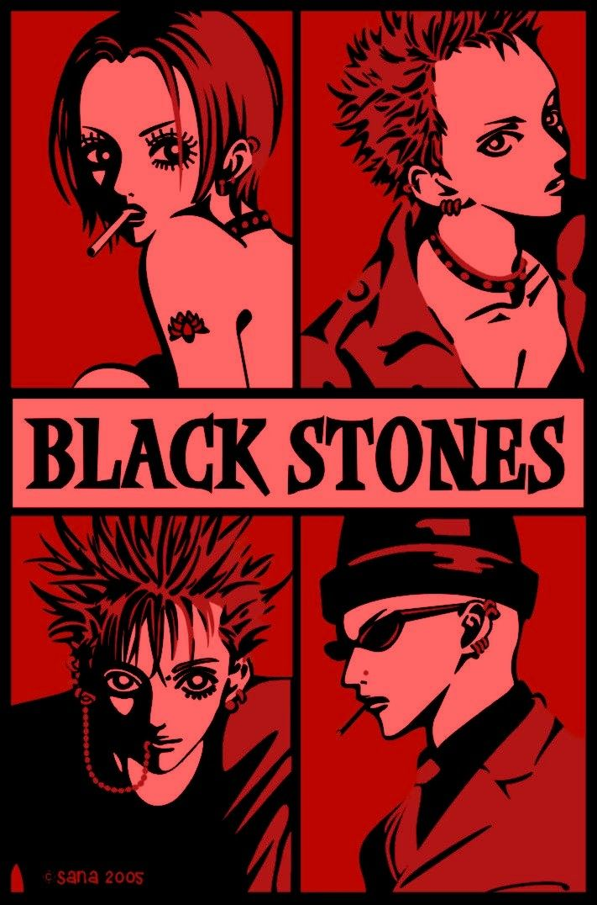

07.05.2025
JUIZ DE FORA
ESGOTADO
08.05.2025
JUIZ DE FORA
ESGOTADO
10.05.2025
BICAS
ESGOTADO
11.05.2025
MATIAS BARBOSA
DISPONÍVEL
ESGOTADO
ESGOTADO
ESGOTADO
DISPONÍVEL
A banda que conquistou Tokyo com sua energia explosiva e atitude inconfundível.
Uma voz poderosa que canaliza emoções cruas e intensas. Carismática e destemida, comanda o palco como ninguém.
Virtuoso nas cordas, encontra na música sua maior expressão de liberdade. Uma presença misteriosa e apaixonada que reverbera em cada riff.
Balança as linhas de baixo com alma sonhadora e entusiasmo juvenil. Sempre buscando harmonia, é o coração caloroso da banda.
Baterista de ritmo impecável e mente estratégica. Um porto seguro para a banda, unindo todos com seu compasso firme.
Acompanhe as últimas notícias sobre a banda, entrevistas exclusivas e aparições na mídia. Fique por dentro de todas as novidades, shows e lançamentos!

Formada por Nana Osaki e amigos em Tóquio, a Black Stones – carinhosamente conhecida como BLAST – surgiu com uma mistura de punk rock, atitude e muita paixão. A voz intensa de Nana, somada à energia dos demais integrantes, logo chamou a atenção na cena underground, atraindo um público cada vez mais fiel.
Inspirados pela vontade de romper barreiras, suas apresentações são carregadas de emoção e rebeldia. Com letras que falam sobre liberdade, amor e desafios, a BLAST conquistou status de banda icônica no universo de Nana, marcando o coração dos fãs a cada novo acorde.
E-mail: contato@blackstones.com Instagram: @blackstones_official Facebook: facebook.com/theblackstones
Siga a BLAST e mantenha o espírito do punk vivo!
Apoie a cena do rock underground independente. Garanta itens exclusivos da BLAST e leve um pedaço da banda com você!